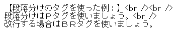

段落分け<p>タグと改行<br />の違い
■<br />タグを連続して一行分の行間を空ける
ブログなどの編集画面で「改行」をする際、エンターキーを１回押すと自動的に改行タグの<br />が１つ挿入され、その箇所で改行が反映される仕組みになっています。
さらにもう１回連続してエンターキーを押して<br /><br />とすると、さらに改行がされて一行分の行間が空きます。同じように３回なら２行分の行間になります。
このように、ブログなどの編集画面で行間を空ける際、ただ単純にエンターキーを押して連続して改行することで対応することができます。
けれども、ホームページでHTMLタグを手打ちして作成する際は自分でこの<br />タグをHTMLに直接記入していく必要があります。HTMLファイル上でいくらエンターキーを押しても、ブログのように自動的に<br />のHTMLタグが挿入されず、実際のサイトにも改行は反映されないので注意しましょう。
■<p>タグで一行分の行間を空ける
また、この一行分の行間を空ける際は、この<br /><br />以外にも段落わけのＰタグ<p>を使用して一行分の空白を作る方法があります。
改行のBRタグは単体で機能しますが、段落わけのＰタグは開始タグ<p>と終了タグ</p>の両方をセットにして段落のはじめと終わりに記入します。
例えば、このようにHTMLに記入したとします。
すると、このようにPタグの間に１行分の行間が空いて表示されます。
【段落分けのタグを使った例：】
段落分けはＰタグを使いましょう。
改行する場合はＢＲタグを使いましょう。
これは、次のように改行タグのBRを単純に２回連続して使っても同じように１行の空白が空きます。

表示のされ方は同じですが、基本的に、brタグは「改行」、pタグは「段落分け」をする際に使います。段落は複数の文が集まって文章のまとまりになるため、１文ごとに段落わけのＰタグばかりを使うのは避け、適度な文章のまとまりごとに段落わけするようにしましょう。
このbrタグの書き方は、DTDの古い形式（HTML 4.01など）や新しい形式（xhtmlなど）によって違いがあります。古いHTML 4.01では<br>と書くのに対し、xhtmlでは<br />と記述するのが一般的ですが、どちらで記入してもどのブラウザでも特に問題なく表示されます。
■ブログサービスでの自動改行設定
無料ブログサービスの管理画面で記事を作成する場合、デフォルトの状態ではエンターを押すたびに自動的に<br />がhtml上に挿入される仕様になっています。
そのため、無料ブログでhtmlタグを使いながら使いながら文章を作成する場合は、自動改行設定を無効にしてから記入しないとうまく表示されません。
例えば、シーサーブログの場合は自動改行設定を無効にするとhtmlタグの記入が有効になります。
FC2無料ホームページの場合も「ソース」のボタンを押すとhtmlタグの記入が有効になります。
■CSSでの行間の調整方法
また、行と行の間の幅については、スタイルシートでline-height（行の高さ）の値を指定することで調整することができます。
【例：】
.sample {line-height:150%;}
加えて、段落と段落の間の幅については上下にmarginの値を指定しておくとよいでしょう。
【例：】
p {margin:1em 0 1em 0;}